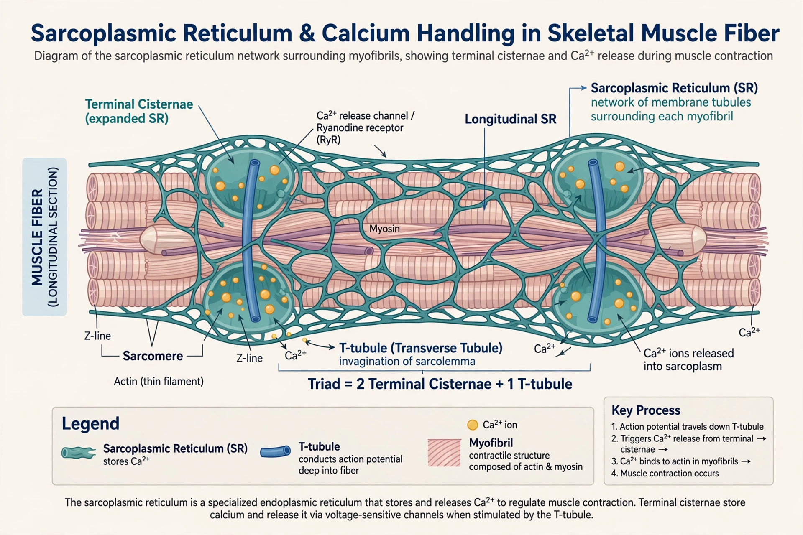

Sarcoplasmic reticulum
| Sarcoplasmic reticulum | |
|---|---|
 | |
| Abbreviation | SR |
| Cell type | Muscle cells (myocytes) |
| Function | Storage, release and reuptake of Ca²⁺ for contraction and relaxation |
| Key proteins | Ryanodine receptor (RyR); SERCA pump; calsequestrin |
The sarcoplasmic reticulum (SR) is a membrane-bound structure found within muscle cells that is similar to the smooth endoplasmic reticulum of other cells. Its main function is to store calcium ions (Ca²⁺) and release them on demand, thereby regulating the cytosolic calcium concentration that controls muscle contraction and relaxation.
Structure
The SR forms an irregular network of tubules and sacs surrounding each myofibril. Along most of its length it runs as longitudinal tubules; at intervals it expands into flattened sacs called terminal cisternae. A terminal cisterna on either side of a T-tubule forms the triad, the structural unit of excitation–contraction coupling in skeletal muscle. Within the lumen, the protein calsequestrin binds large amounts of calcium at low affinity, allowing the SR to store calcium at total concentrations far above the free level.
Calcium release and reuptake
When a muscle action potential travels down the T-tubules, voltage-sensing dihydropyridine receptors trigger opening of ryanodine receptors — enormous tetrameric calcium-release channels in the junctional SR membrane. Ca²⁺ floods into the cytosol, rising roughly a hundred-fold (from ~0.1 µM to ~10 µM), binds troponin, displaces tropomyosin, and initiates contraction. Continued release underlies the summated contractions described under tetanus (physiology).
Relaxation occurs when the sarcoplasmic/endoplasmic reticulum Ca²⁺-ATPase (SERCA) pumps calcium back into the SR at the expense of ATP. The rate of SERCA activity is a major determinant of relaxation speed and differs between slow-twitch and fast-twitch fibres; in the heart, SERCA2a is regulated by phospholamban, and its dysfunction contributes to heart failure.
Clinical relevance
Mutations in the skeletal-muscle ryanodine receptor (RYR1) cause malignant hyperthermia — a life-threatening hypermetabolic reaction to volatile anaesthetics — and central core disease. Mutations in cardiac RyR2 cause catecholaminergic polymorphic ventricular tachycardia, in which leaky SR calcium release triggers arrhythmias under adrenaline. Dantrolene, which inhibits RyR1, is the specific treatment for malignant hyperthermia.
History
The reticular network inside muscle fibres was described by Emilio Veratti in 1902, forgotten, and rediscovered with the electron microscope in the 1950s during the era in which Hugh Huxley and others established the sliding filament model.